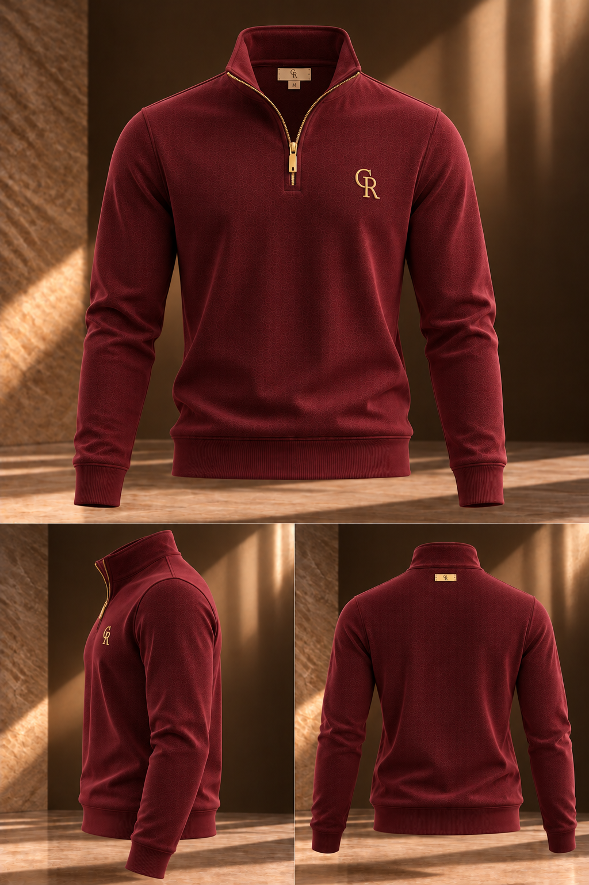

THE FIRST COLLECTION2026 — 2027
PREPARING THE EXPERIENCE
01 / 03 · MENSWEARHeritage
Heritage
Half-Zip.
An expression of modern heritage. A signature silhouette in Bordeaux.
DISCOVER THE PIECE ↗EXPLORE THE COLLECTION
01 / 03
SWIPE LEFT OR RIGHT
Not made for a moment.
Made to become part of yours.
CURATED ESSENTIALS / 2026–27The First
The First
Collection.
01 — 03
Three distinct silhouettes. Five considered colourways. Discover every detail.
SHOP ALL PIECES ↗THE COLLECTION IS LOADING

A SIGNATURE IN BORDEAUXElegance,
Elegance,
without excess.
Thoughtful proportions. Quiet confidence. The details make the difference.
EXPLORE HERITAGE HALF-ZIP ↗